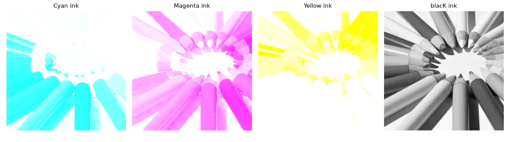
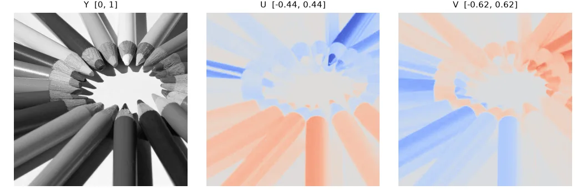
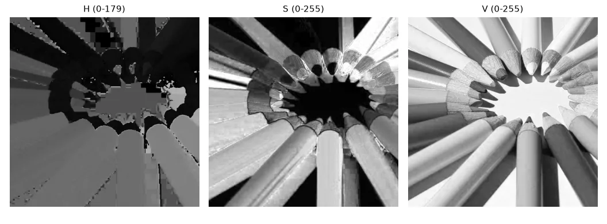
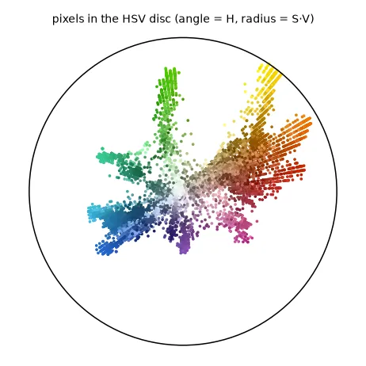
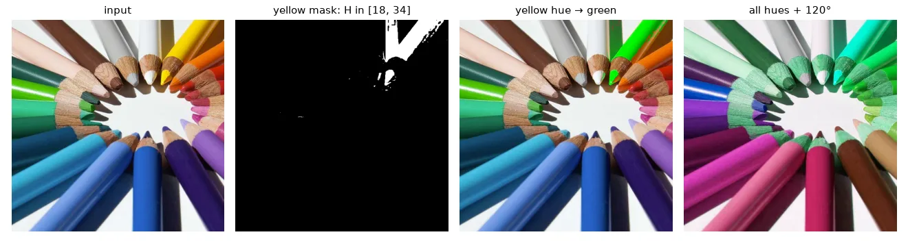
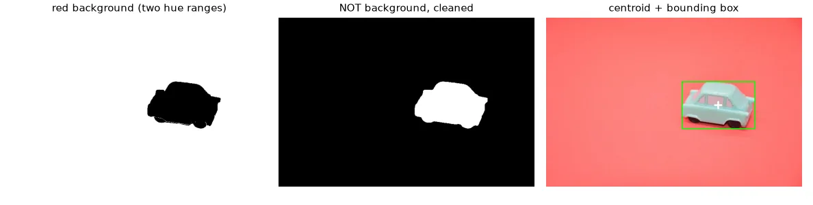

Why other colour spaces?#
In RGB, all three channels mix what colour a pixel is with how bright it is. A dark blue and a light blue pencil are far apart in RGB, so "select the blue pixels" is not a simple box. Other colour spaces separate those two pieces of information.
CMYK: subtractive colour for printing#
Screens add light (RGB, starting from black); printers subtract it with inks (starting from white paper). Cyan absorbs red, magenta absorbs green, yellow absorbs blue. Since mixing the three inks to make black is expensive and muddy, a fourth black ink (K) takes over the common part. With \(r, g, b \in [0, 1]\):
and back: \(r = (1 - c)(1 - k)\), and so on.
def rgb_to_cmyk(rgb):
x = rgb.astype(np.float32) / 255
k = 1 - x.max(axis=2)
denom = np.where(k < 1, 1 - k, 1) # avoid 0/0 on pure black pixels
c, m, y = [(1 - x[..., i] - k) / denom for i in range(3)]
return np.dstack([c, m, y, k]) # floats in [0, 1]
def cmyk_to_rgb(cmyk):
c, m, y, k = np.moveaxis(cmyk, 2, 0)
rgb = np.dstack([(1 - c) * (1 - k), (1 - m) * (1 - k), (1 - y) * (1 - k)])
return np.round(rgb * 255).astype(np.uint8)
The round trip RGB → CMYK → RGB is exact (max error 0). OpenCV has no CMYK conversion — it is a printing concern.

YUV: luma plus two colour differences#
YUV was designed in the 1950s so that colour TV could stay compatible with black-and-white sets: Y is exactly the gray image of lesson 01, and U, V carry the colour as differences from it.
def rgb_to_yuv(rgb):
x = rgb.astype(np.float32) / 255
r, g, b = x[..., 0], x[..., 1], x[..., 2]
y = 0.299 * r + 0.587 * g + 0.114 * b # luma: what a black-and-white TV shows
u = 0.492 * (b - y) # blue-difference chroma, in [-0.436, 0.436]
v = 0.877 * (r - y) # red-difference chroma, in [-0.615, 0.615]
return np.dstack([y, u, v])
def yuv_to_rgb(yuv):
y, u, v = yuv[..., 0], yuv[..., 1], yuv[..., 2]
r = y + 1.140 * v
g = y - 0.395 * u - 0.581 * v
b = y + 2.032 * u
return np.clip(np.round(np.dstack([r, g, b]) * 255), 0, 255).astype(np.uint8)
\(U\) and \(V\) are signed (\(U \in [-0.44, 0.44]\), \(V \in [-0.62, 0.62]\)). OpenCV's COLOR_RGB2YUV stores them in uint8 with an offset of 128, so you cannot compare the two numbers directly — only after converting. Since the eye is less sensitive to colour detail than to brightness, video codecs store U and V at half resolution (4:2:0) — and you can barely tell.

HSV: hue, saturation, value#
HSV is built for humans: H (hue) is the colour as an angle on the colour wheel, S (saturation) how pure it is, V (value) how bright. With \(M = \max(r, g, b)\), \(m = \min(r, g, b)\), \(\Delta = M - m\):
def rgb_to_hsv(rgb):
"""H in [0, 180) (degrees / 2, fits in uint8), S and V in [0, 255], like OpenCV."""
x = rgb.astype(np.float32) / 255
r, g, b = x[..., 0], x[..., 1], x[..., 2]
mx, mn = x.max(axis=2), x.min(axis=2)
delta = mx - mn
safe = np.where(delta == 0, 1, delta)
h = np.zeros_like(mx)
h = np.where(mx == r, (60 * (g - b) / safe) % 360, h)
h = np.where(mx == g, 60 * (b - r) / safe + 120, h)
h = np.where(mx == b, 60 * (r - g) / safe + 240, h)
h = np.where(delta == 0, 0, h) # gray: hue undefined, use 0
s = np.where(mx == 0, 0, delta / np.where(mx == 0, 1, mx))
return np.dstack([h / 2, s * 255, mx * 255]).round().astype(np.uint8)
In OpenCV's 8-bit HSV, H is divided by 2 (0–179) to fit in a byte, while S and V go to 255. Our version matches cv2.COLOR_BGR2HSV within 1 unit.


Recolouring by hue#
Select a hue range with cv2.inRange, change H, keep S and V: the shading stays, so the result looks natural.
hsv = cv2.cvtColor(bgr, cv2.COLOR_BGR2HSV)
# Yellow sits in a narrow hue band (~35-65 degrees, i.e. 17-33 in OpenCV units),
# whatever its brightness. Saturation and value thresholds drop the white paper.
yellow = cv2.inRange(hsv, (18, 120, 100), (34, 255, 255))
recolored = hsv.copy()
recolored[..., 0][yellow > 0] = 60 # 120 degrees / 2: green. S and V untouched,
recolored = cv2.cvtColor(recolored, cv2.COLOR_HSV2BGR) # so the shading still looks natural
rotated = hsv.copy()
rotated[..., 0] = (rotated[..., 0].astype(int) + 60) % 180 # rotate *every* hue by 120 degrees
rotated = cv2.cvtColor(rotated, cv2.COLOR_HSV2BGR)
# Red wraps around 0 degrees, so it needs two ranges:
red = cv2.inRange(hsv, (0, 120, 70), (8, 255, 255)) | cv2.inRange(hsv, (170, 120, 70), (179, 255, 255))

Red wraps around
Red sits at both ends of the hue axis (0° and 360°, i.e. 0 and 179 in OpenCV). A red mask therefore needs two ranges combined with |. Also always constrain S and V: a white or black pixel has an undefined, meaningless hue.
Segment and locate an object#
This is the robotics version (my UFRN lecture tracked a toy car this way): segment the object by colour, then compute its centre of mass from the image moments \(m_{pq} = \sum_{x,y} x^p y^q\, I(x, y)\):
The car is pale (S ≈ 40) — hard to threshold. The background is a saturated red (S ≈ 135) — easy. So we segment the background and invert, keep the largest blob and fill its holes:
car = U.imread("color/toy_car.jpg")
car_hsv = cv2.cvtColor(car, cv2.COLOR_BGR2HSV)
# The pale car (S ~ 40) is hard to threshold, the saturated red background (S ~ 135) is easy:
# segment the background and invert.
background = cv2.inRange(car_hsv, (0, 80, 80), (12, 255, 255)) | \
cv2.inRange(car_hsv, (168, 80, 80), (179, 255, 255))
mask = cv2.bitwise_not(background)
mask = cv2.morphologyEx(mask, cv2.MORPH_OPEN, np.ones((5, 5), np.uint8))
# keep the largest blob and fill its holes (windows, reflections)
n, labels, stats, _ = cv2.connectedComponentsWithStats(mask)
largest = 1 + np.argmax(stats[1:, cv2.CC_STAT_AREA])
mask = np.where(labels == largest, 255, 0).astype(np.uint8)
mask = cv2.morphologyEx(mask, cv2.MORPH_CLOSE, cv2.getStructuringElement(cv2.MORPH_ELLIPSE, (15, 15)))
m = cv2.moments(mask, binaryImage=True)
cx, cy = m["m10"] / m["m00"], m["m01"] / m["m00"] # centre of mass
x, y, w, h = cv2.boundingRect(mask)

Exercises#
- Plot the H histogram of
crayons.jpg(only pixels with S > 100). Can you count the pencil colours from its peaks? - Recolour all blue pencils to orange (careful with the target hue in OpenCV units).
- Convert to L*a*b* (
cv2.COLOR_BGR2LAB) and segment the car with a threshold on the a* channel only. Compare with the HSV approach.